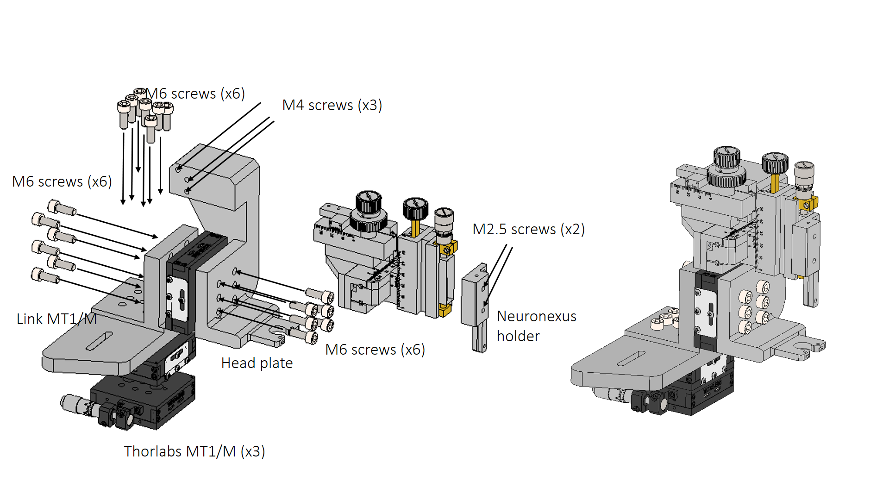
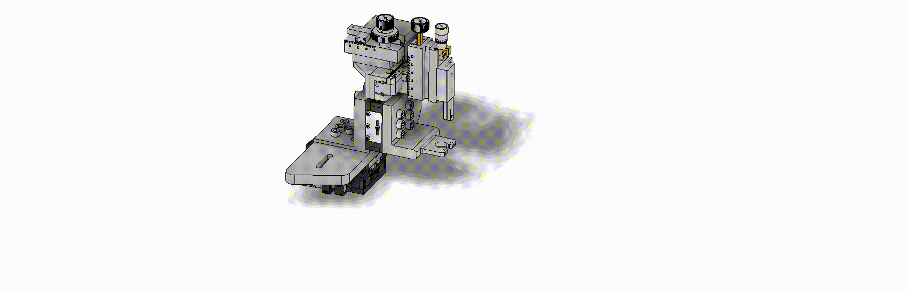
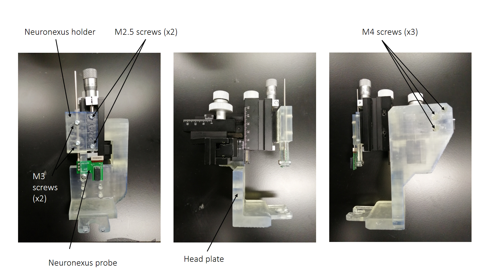
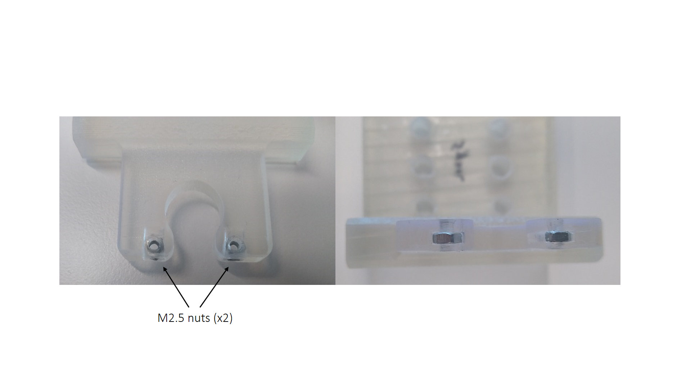
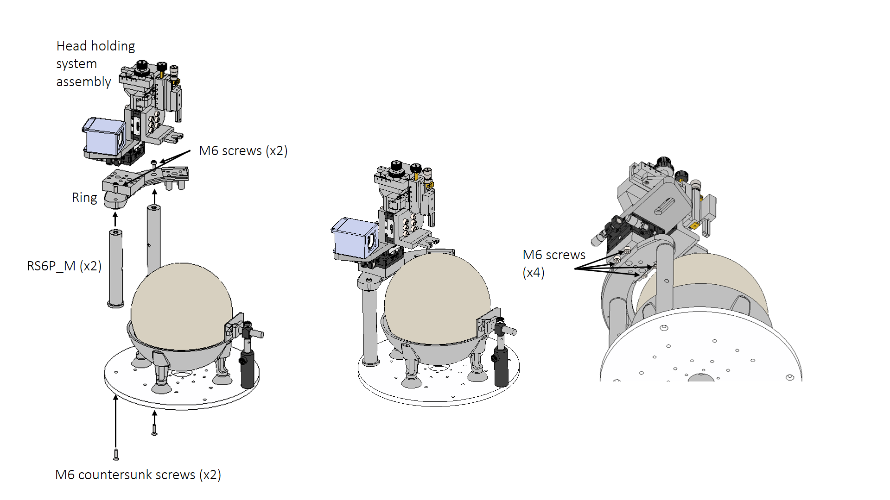

Assembly
From the initial design for behavioural recordings or imaging, we designed an additional head holder plate (Head plate) which is mechanically connected with three M3 screws to a Left handed micromanipulator MM33. This device provides fine adjustment (0.10 mm) of the three axes with a finer micrometer adjustment for the vertical stage, ideal to precisely adjust the depth of an extracellular probe. The total range of motion is 10 mm for the x axis and 20 mm for the Y and Z axes.
|  |
|---|
|  |
| Figure 1 and 2. Head holding system assembly |
The parts have been successfully 3D printed using FormLabs Clear V4 resin. The resulting stiffness has been proved appropriate for the integrity of electrophysiology experiments.
|  |
|---|
| Figure 3. Head-plate system subassembly |
|  |
|---|
| Figure 4. Head-plate system nuts insertion |
The Head holder is assembled on the Ring with M6 screws, also 3D printed in clear V4 resin in a Form 2 3D printer. The Ring is assembled with two RS6P_M posts on the rotary stage platform.
|  |
|---|
| Figure 5. Head holding system and circular platform assembly |
| Figure 6. Assembly on platform |
| Figure 7. Assembly on platform |